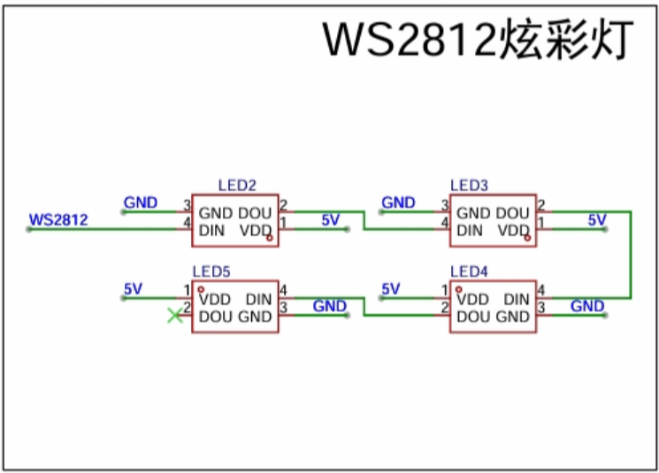
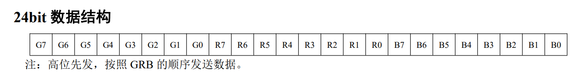
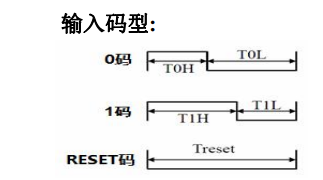
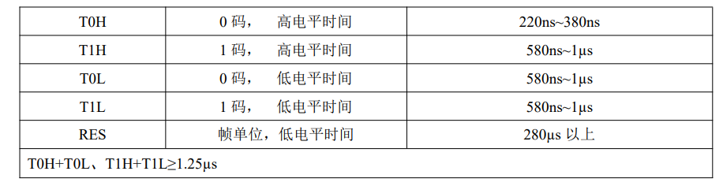
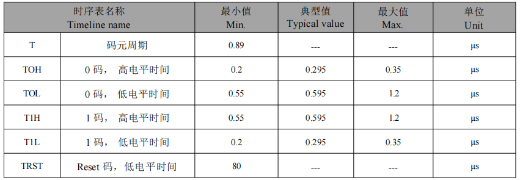
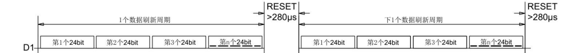
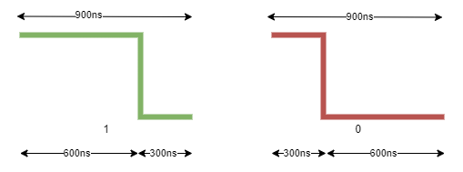
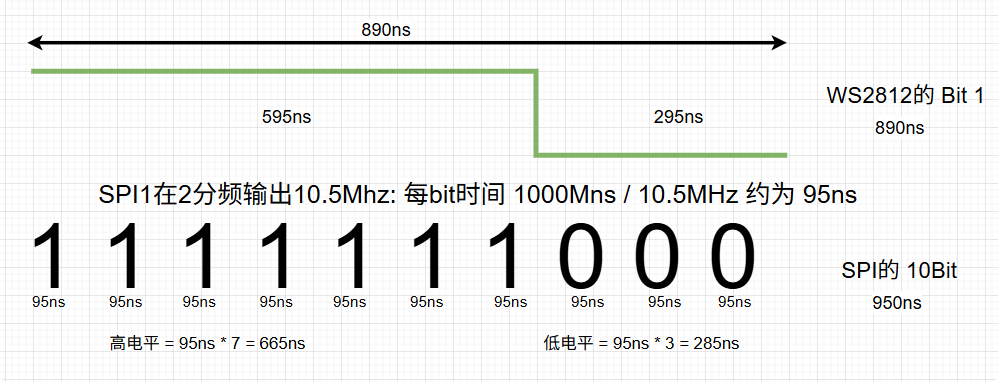
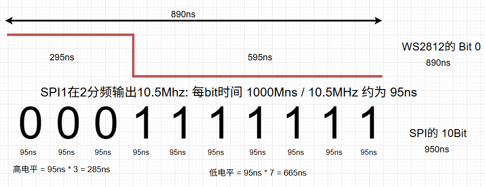
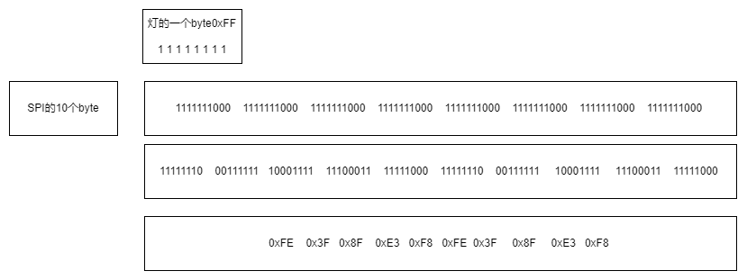

<!DOCTYPE lake>
<h2 data-lake-id="MpmBx" id="MpmBx"><span data-lake-id="u2f8f5292" id="u2f8f5292">学习目标</span></h2><ul list="u3b8a54cf"><li data-lake-id="u22ab3fe1" fid="uf5066d33" id="u22ab3fe1"><span data-lake-id="u59dbd61d" id="u59dbd61d">理解ws2812驱动原理</span></li><li data-lake-id="uf01dbae0" fid="uf5066d33" id="uf01dbae0"><span data-lake-id="u6db672f8" id="u6db672f8">了解三原色</span></li><li data-lake-id="u7126eadf" fid="uf5066d33" id="u7126eadf"><span data-lake-id="uc0ac79bd" id="uc0ac79bd">了解SPI如何驱动ws2812</span></li><li data-lake-id="u1e274c78" fid="uf5066d33" id="u1e274c78"><span data-lake-id="uba4e09f8" id="uba4e09f8">理解 数据驱动显示策略</span></li></ul><h2 data-lake-id="cA0My" id="cA0My"><span data-lake-id="u27f80cd0" id="u27f80cd0">学习内容</span></h2><h3 data-lake-id="CfK0M" id="CfK0M"><span data-lake-id="ued155d88" id="ued155d88">原理图</span></h3><p data-lake-id="ub00d0c8a" id="ub00d0c8a"></p><ul list="uc4432e22"><li data-lake-id="ued8c5d6b" fid="uaf5b3e72" id="ued8c5d6b"><span data-lake-id="ucf2efd0a" id="ucf2efd0a">5V供电</span></li><li data-lake-id="ueb1f8051" fid="uaf5b3e72" id="ueb1f8051"><span data-lake-id="uea16965a" id="uea16965a">单线信号驱动</span></li></ul><p data-lake-id="u87a1328b" id="u87a1328b"><strong><span data-lake-id="u2203ef34" id="u2203ef34">概念：</span></strong></p><p data-lake-id="uf7e42f8c" id="uf7e42f8c"><span data-lake-id="u7f9be832" id="u7f9be832">WS2812 是一种集成了 RGB LED 和 驱动控制芯片（IC） 的智能外控LED光源，属于“NeoPixel”家族中的常见型号。它通过单线数字信号实现多个LED的级联控制，无需额外控制器，广泛应用于LED灯带、显示屏、装饰照明等场景。</span></p><h3 data-lake-id="HTNOW" id="HTNOW"><span data-lake-id="ufee1efea" id="ufee1efea">WS2812驱动原理</span></h3><h4 data-lake-id="Z6j1j" id="Z6j1j"><span data-lake-id="ub08c1710" id="ub08c1710">三原色</span></h4><p data-lake-id="uf7d5443e" id="uf7d5443e"><span data-lake-id="u979c558c" id="u979c558c">R、G、B为三原色，分别为红、绿、蓝。</span></p><p data-lake-id="u3c6e7f9b" id="u3c6e7f9b"><span data-lake-id="ue0884afc" id="ue0884afc">颜色是有深度的，例如，通常说深红、浅红，表示的是深度，都是红色，红的程度不同。对于科学计算而言，会更准确的对颜色进行分级。</span></p><p data-lake-id="u4640da58" id="u4640da58"><span data-lake-id="ubd53be8a" id="ubd53be8a">RGB888，表示的是 红色、绿色、蓝色分别都用 2的8次方进行分级，也就是256种等级，取值为0到255，255表示的是最深色。</span></p><p data-lake-id="u51a6c738" id="u51a6c738"><span data-lake-id="u2aca170d" id="u2aca170d">RGB565，表示的是 红色用 2的5次方进行分级，也就是32种等级，取值为0到31，31表示最红； 绿色用 2的6次方进行分级，也就是64种等级，取值为0到63，63表示最绿； 蓝色用 2的5次方进行分级，也就是32种等级，取值为0到31，31表示最蓝；</span></p><p data-lake-id="u9e59f7aa" id="u9e59f7aa"><span data-lake-id="u9543d13f" id="u9543d13f">​</span><br/></p><p data-lake-id="u9be0f638" id="u9be0f638"><span data-lake-id="ueced5665" id="ueced5665">对于RGB888，计算机通常用 3个byte进行颜色表示，也就是24个bit，每种颜色用8个bit进行表示。</span></p><p data-lake-id="ua073822e" id="ua073822e"><span data-lake-id="udfc5c204" id="udfc5c204">对于RG565，计算机通常用 2个byte进行颜色表示，也就是16个bit，颜色分别用5个bit、6个bit、5个bit进行表示。</span></p><h4 data-lake-id="UFyai" id="UFyai"><span data-lake-id="u320141b7" id="u320141b7">WS2812颜色表示</span></h4><p data-lake-id="ud9a4d824" id="ud9a4d824"><span data-lake-id="uc66719f3" id="uc66719f3">采用的是RGB888的方式，进行表示的，只是顺序有所不同。</span></p><p data-lake-id="uf17c6493" id="uf17c6493"></p><p data-lake-id="u88dec75c" id="u88dec75c"><span data-lake-id="u01c03630" id="u01c03630">驱动方式就是需要把颜色信息传递给灯，也就是将24个bit传递给灯，对于ws2812，至关重要的是如何表达1个bit。1个bit结果只有两种，0或者1。</span></p><p data-lake-id="u65d9cd8d" id="u65d9cd8d"><span data-lake-id="u2aecafdb" id="u2aecafdb">0码，1码的表示</span></p><p data-lake-id="u36d3bfcd" id="u36d3bfcd"></p><p data-lake-id="ubb321ddf" id="ubb321ddf"></p><p data-lake-id="u87fb6097" id="u87fb6097"></p><p data-lake-id="ua4572296" id="ua4572296"><br/></p><h4 data-lake-id="VZpFY" id="VZpFY"><span data-lake-id="uf5d3ade2" id="uf5d3ade2">多灯连续控制</span></h4><p data-lake-id="u58e70f37" id="u58e70f37"><span data-lake-id="u5750a575" id="u5750a575">1个灯是24个bit，n个灯就是n * 24bit，但是点灯需要有起始。</span></p><p data-lake-id="u3d301e08" id="u3d301e08"><span data-lake-id="ue5275724" id="ue5275724">例如，要驱动 10个灯，也就是240bit，如果不停刷新，无法确定240bit是从哪个位置起始的，因此ws2812设计了一个RESET码，区分灯的数量。</span></p><p data-lake-id="ud5014d5f" id="ud5014d5f"></p><h3 data-lake-id="HiMvQ" id="HiMvQ"><span data-lake-id="uc7bd39e9" id="uc7bd39e9">驱动方式</span></h3><p data-lake-id="u240dc915" id="u240dc915"><span data-lake-id="u549feb7c" id="u549feb7c">可选的驱动方式有：</span></p><ol list="ud9a20e47"><li data-lake-id="uad1fd757" fid="u54ffb45a" id="uad1fd757"><span data-lake-id="u0926284a" id="u0926284a">通过硬睡眠</span></li><li data-lake-id="uc015763f" fid="u54ffb45a" id="uc015763f"><span data-lake-id="ud14d3d52" id="ud14d3d52">通过PWM</span></li><li data-lake-id="u837a74eb" fid="u54ffb45a" id="u837a74eb"><span data-lake-id="u5112abc7" id="u5112abc7">通过SPI</span></li></ol><h4 data-lake-id="i186Y" id="i186Y"><span data-lake-id="u4d1dd4cd" id="u4d1dd4cd">硬睡眠</span></h4><p data-lake-id="u66453c6a" id="u66453c6a"><span data-lake-id="ud2e2e3d9" id="ud2e2e3d9">可以实现，单需要通过示波器进行睡眠调节，应该没有睡眠ns的方式，只能通过控制循环或者堆无效代码消耗掉ns的时间。</span></p><p data-lake-id="ufc7e0f7c" id="ufc7e0f7c"><span data-lake-id="uaeefabad" id="uaeefabad">问题是，只能点灯，不能干其他任何活。</span></p><p data-lake-id="ua7ef7f59" id="ua7ef7f59"><span data-lake-id="u44281cc8" id="u44281cc8">属于Demo级别，无法应用到复杂逻辑种。</span></p><h4 data-lake-id="cPH4l" id="cPH4l"><span data-lake-id="uc0ddbc06" id="uc0ddbc06">PWM</span></h4><p data-lake-id="u51c4dc66" id="u51c4dc66"><span data-lake-id="uce9eb67e" id="uce9eb67e">理论上是可以通过PWM驱动的，通过pwm修改占空比，控制高低电平，模拟1个bit。但是，1个bit完成后，需要下一个bit，也就是可能存在每个bit的占空比不同，需要在一个周期完成后，立刻修改占空比。也就是这个时间节点的产生中断，再修改。由于1个bit表示的的时长极短，会导致中断频繁发生，也会导致其他活分不到时间片。导致资源严重浪费。</span></p><h4 data-lake-id="EAdqb" id="EAdqb"><span data-lake-id="uda578047" id="uda578047">SPI</span></h4><p data-lake-id="u47c44e97" id="u47c44e97"><span data-lake-id="uc3eff91e" id="uc3eff91e">SPI的周期固定，高低电平可以通过写数据模拟，不需要中间打断进行修改。采用硬件实现不消耗系统资源，不需要中途频繁打断，不占用中断资源。属于理想的驱动方式。</span></p><h3 data-lake-id="oguU6" id="oguU6"><span data-lake-id="u3366812e" id="u3366812e">SPI驱动</span></h3><h4 data-lake-id="dMmEj" id="dMmEj"><span data-lake-id="u64707e46" id="u64707e46">WS2812需要的内容</span></h4><p data-lake-id="u31c6f0ef" id="u31c6f0ef"><span data-lake-id="ue7290b6c" id="ue7290b6c">点灯需要的是 24个bit，每个bit 由0码或者1码组成，大概时长问 900ns左右</span></p><p data-lake-id="ucbdbe64e" id="ucbdbe64e"></p><h4 data-lake-id="hQAl2" id="hQAl2"><span data-lake-id="ufd18055b" id="ufd18055b">SPI时钟周期</span></h4><p data-lake-id="u6defecf7" id="u6defecf7"><span data-lake-id="uaf62bdf3" id="uaf62bdf3">对于SPI1来说(最高主频42M):</span></p><p data-lake-id="u6fa2a5fc" id="u6fa2a5fc"><span data-lake-id="ue873f9ba" id="ue873f9ba">在4分频输出10.5MHz频率下:</span></p><p data-lake-id="ue9c906b3" id="ue9c906b3"><span data-lake-id="u9ea732b8" id="u9ea732b8">表示1秒钟有 10.5M次的bit进行传输，也就是1个bit传输需要 1000 000 000ns / 10 500 000，约合95ns。</span></p><p data-lake-id="u48f8f5c9" id="u48f8f5c9"><span data-lake-id="ue1e50928" id="ue1e50928">以此类推，灯的1个bit，需要用 SPI的10个bit表达。24个bit就是 10 * 24bit = 30 byte。</span><span data-lake-id="u8d054dc1" id="u8d054dc1">​</span></p><p data-lake-id="u9b98b5ed" id="u9b98b5ed"><span data-lake-id="u117aae38" id="u117aae38">从内存角度考虑，10.5MHZ比较合理, SPI发送字节数量是个整数。</span></p><p data-lake-id="u6eb5dd1e" id="u6eb5dd1e"><span data-lake-id="uee005cb3" id="uee005cb3">​</span><br/></p><ul list="u407c632a"><li data-lake-id="u50b72437" fid="u89219579" id="u50b72437"><strong><span data-lake-id="u546404c8" id="u546404c8">1码: 高595ns -&gt; 95ns * 7 (665ns)      低295ns -&gt; 95ns * 3 (285ns) </span></strong></li></ul><p data-lake-id="u19dcb255" id="u19dcb255"></p><p data-lake-id="u18cfe47a" id="u18cfe47a"><br/></p><ul list="u407c632a" start="2"><li data-lake-id="u7b666f88" fid="u89219579" id="u7b666f88"><strong><span data-lake-id="u7ebec983" id="u7ebec983">0码: 高295ns -&gt; 95ns * 3 (285ns)      低595ns -&gt; 95ns * 7 (665ns)</span></strong></li></ul><p data-lake-id="u3bb5101b" id="u3bb5101b"></p><p data-lake-id="u099f3e9a" id="u099f3e9a"><br/></p><h4 data-lake-id="mb1ga" id="mb1ga"><span data-lake-id="ufc8141e1" id="ufc8141e1">SPI数据转WS2812数据</span></h4><p data-lake-id="u275ee256" id="u275ee256"><span data-lake-id="ucf85dbe1" id="ucf85dbe1">核心操作就是 </span></p><ul list="uf0b9194c"><li data-lake-id="u5f0f442d" fid="ue1b4e4fc" id="u5f0f442d"><span data-lake-id="ub9bf23b5" id="ub9bf23b5">将颜色值的24个bit  转为 SPI的240个bit</span></li><li data-lake-id="u22f163cf" fid="ue1b4e4fc" id="u22f163cf"><span data-lake-id="ub5aeadaf" id="ub5aeadaf">即颜色值的3个byte 转为 SPI的30个byte</span></li><li data-lake-id="u966a2c4f" fid="ue1b4e4fc" id="u966a2c4f"><span data-lake-id="u0425f82b" id="u0425f82b">即颜色值的1个byte 转为 SPI的10个byte。也就是1个颜色需要10个SPI的byte表示。</span></li></ul><p data-lake-id="uf99a3f2d" id="uf99a3f2d"><span data-lake-id="u28f38f87" id="u28f38f87">例如红色为 0xFF。用二进制表示 就是 </span><code data-lake-id="u86fddb98" id="u86fddb98"><span data-lake-id="uac840e9b" id="uac840e9b">1111 1111</span></code><span data-lake-id="u2e7bf187" id="u2e7bf187">，需要将这个颜色转换为 10个byte 用于spi的写操作。</span></p><p data-lake-id="ubae79bfe" id="ubae79bfe"></p><p data-lake-id="u4a6ebd59" id="u4a6ebd59"><span data-lake-id="u755677ea" id="u755677ea">转换出来的结果为:</span></p><span class="yuque-card-unsupported">[codeblock]</span><span class="yuque-card-unsupported">[codeblock]</span><h3 data-lake-id="cUh2I" id="cUh2I"><span data-lake-id="ub74adac5" id="ub74adac5">驱动实现</span></h3><span class="yuque-card-unsupported">[codeblock]</span><span class="yuque-card-unsupported">[codeblock]</span><h4 data-lake-id="pjmga" id="pjmga"><span data-lake-id="u04164daf" id="u04164daf">DMA开启注意</span></h4><span class="yuque-card-unsupported">[codeblock]</span><span class="yuque-card-unsupported">[codeblock]</span><h2 data-lake-id="bOcBE" id="bOcBE"><span data-lake-id="u8a0c41a2" id="u8a0c41a2">练习题</span></h2><ol list="u833fa76c"><li data-lake-id="u968c8102" fid="u8d9e4e6c" id="u968c8102"><span data-lake-id="uaaa67454" id="uaaa67454">实现ws2812驱动</span></li><li data-lake-id="ubae143e0" fid="u8d9e4e6c" id="ubae143e0"><span data-lake-id="u33162010" id="u33162010">扩展，什么是hsv颜色，hsv如何转换为RGB。</span></li></ol>